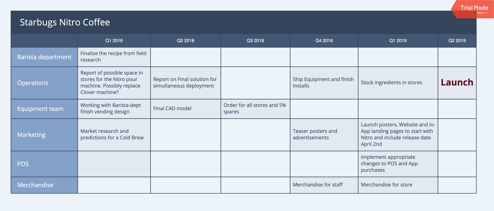
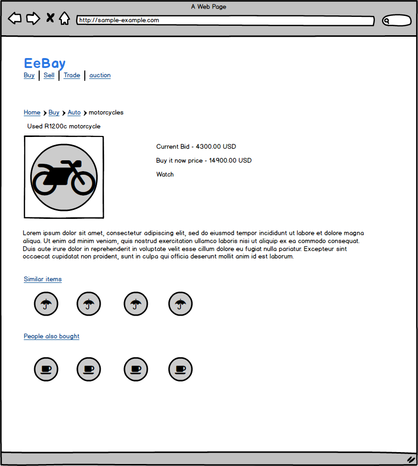

Portion of Product Management drills
-
Simple, intuitive User experience
I have learnt from experience that the user experience needs to be simple and non-cumbersome in flow. What doesn't flow will 'drop' and will become an ideal corner to be caught in a good funnel analysis. In the past when I designed a measurement tool with a clean intuitive web application based results view, it got deployed into other departments with a little tailoring. 1000s of smartphone Apps fail to capture the market as they fail to keep the user engaged either by glitchy or complicated interface/experience. The elevator pitch equivalent in the digital world has only a few seconds of a potential user's attention.
Another great example for me is Netflix's seamless streaming where it adjusts to the device, the screen size, internet speeds among other parameters. Good content might draw new customers but streaming hiccups will lead to abandoned accounts.
-
Market research
When we make a product and are successful in the market, to keep better-ing it becomes imperative so the market share does not get divided or worse your share is lost. Let's say there is a beautiful product and everyone in the business uses it (think excel or similar). If one creates a browser version of it (let's say google's sheets). Now not only are they tapping into the huge user base who are pre-trained to use the product its the new 'go-to' now because it is portable, shareable, live-edit-track, OS/browser agnostic. The original product still has its strengths but everywhere else it has become a choice.
-
Product Roadmap
The primary reason one should build the product roadmap is to make sure all the stakeholders are aligned. Aligned w.r.t feature prioritization, major milestones and MVP-ETAs as these help them (Marketing, Sales, Engineering, finance, E-staff and Customer when applicable) plan their resources and be prepared. As we all know roadmaps sometimes become timetables but without one you might as well call your goal a hobby.
Product roadmaps are required to be the best representation of the product strategy and goal timelines, this also means that they are dynamic in nature. Dynamic because we keep asking "what has changed and what is the impact?" question constantly, and they include Customer-needs, Competition-news and business-decisions to name a few.

-
Don't reinvent the wheel
A dramatic example would be that if a new car model is released with interchangeable Brake and Gas pedals (you are trying to address over usage of the right leg/ankle/foot when driving). Even if the DOT approved it customers will be too few and you too far from breaking even. A moderate example would be when creating a new text editor from scratch (like notepad++), try to organize all the new features into existing groupings/tags (File, Edit, View, Help, etc; and keep all the short-cut combinations applicable even if you plan to build a special keyboard for it. Always bank on the familiarity and build upon it. Yes, exceptions are plenty; like being able to zoom or pan on a webpage or map (using a multi-sense mouse/track-pad) without having to click a bunch of times.
-
Major overhaul? Don't make the user brace for it
When it comes to overhauling an existing feature/product, respect the apprehensions, tap into the loyalty, deliver the exquisite experience. Let's say you are launching a newer view for an email service to support chat/phone service within. Lower the apprehensions of the non-savvy or the not-ready (let's say a new browser, security etc and IT finds it expensive) by letting the user try a lighter version without necessitating the IT efforts or a seamless switchback option.
-
Control | Variations
A|B testing with multiple knobs for feedback is one of the simple tools at a PMs disposal. Let's say you are hosting cloud-based online gaming. The new graphics are more lifelike but add some delay based on the where the online user is. You can release the new graphics to a segment of users. Or use other metrics as Mac/Windows, ISP-provider as other partitionings to learn a more multivariate effect on the user experience.
The below mockup created in Balsamiq shows an example of A|B testing use case. Here we are seeing a mock-up of an online bidding service (like ebay). We also see 'similar items' and 'people also bought' under an item a user is looking at. Now the candidacy for the testing can include:
- 1. Order of the 'similar items' and 'people also bought' which could help us learn if the user is distracted or is making a learned bid. And if the user is buying more items which is motorcycle accessories in this example. We do not want to make the page more complicated than needed.
- 2. What value of either of the lists add? Are these getting any clicks, turning into ad-revenue or purchases.
- 3. Whether to include current bid value for each of the items in these lists.
